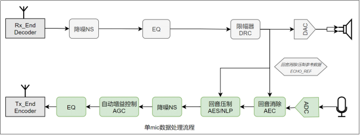
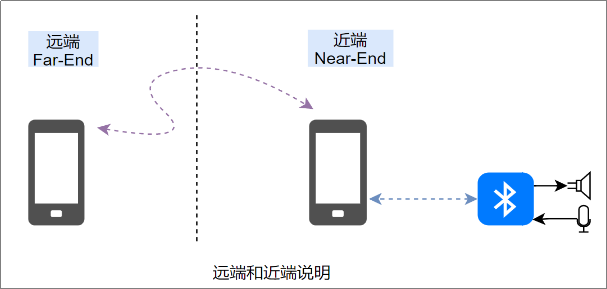
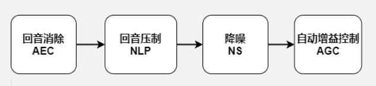
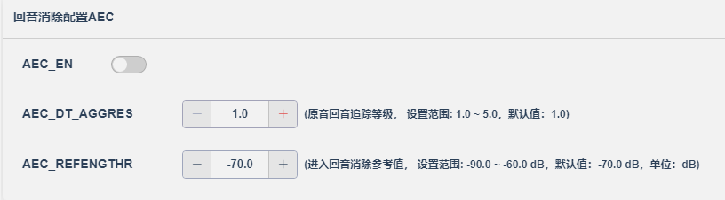
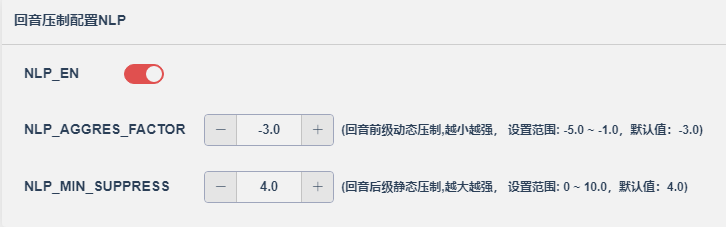
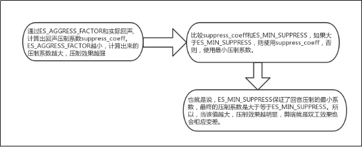
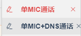
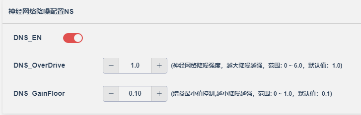
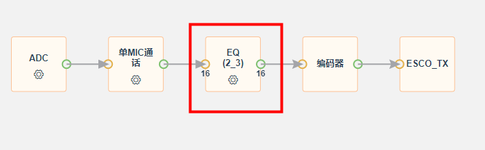
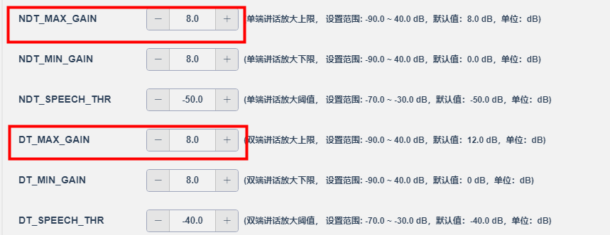

15.3. 1-mic通话调试指引
Version |
Date |
Notes |
|---|---|---|
V1.0 |
2023-04-23 |
初始版本 |
点击跳转 通话算法节点配置说明
15.3.1. 功能介绍
15.3.1.1. 单mic清晰语音处理流程如下：

注：降噪NS模块，可以选择传统降噪ANS，也可以选择神经网络降噪DNS，二选一。
15.3.1.2. 远端和近端的定义
以下是对于端对端通话过程远端和近端的定义，本手册涉及的远端近端概念，遵照以下框图：

我们讨论的回音，是指远端手机讲话，发送到连接蓝牙设备的近端手机，然后声音从蓝牙设备的speaker发出来，又被蓝牙设备的microphone采集到，通过近端手机发送回远端手机，远端可以延时听到自己讲话的声音。
15.3.2. 使用说明
15.3.2.1. 回音算法选择

根据样机的mic能采集到的回声大小，决定使用AEC_MODE_ADVANCE（AEC+NLP）还是AEC_MODE_REDUCE（NLP）。关闭算法，通话的时候，远端听到的回音大小，来判定回音大小。严谨的操作，可以通过远端录音，然后用音频分析软件看人声信号和回音的比例，即信回比SER，当SER小于20dB时，再考虑使用AEC_MODE_ADVANCE。 一般来说，音箱都需要使用AEC_MODE_ADVANCE，耳机方案的话优先使用AEC_MODE_REDUCE。AEC_MODE_REDUCE模式配合NLP模块参数的调试如果不能消除回声，再使用AEC_MODE_ADVANCE，advance模需要更多的内存和运算量。
15.3.2.2. 回音消除AEC
AEC主要用来消除回音中的线性部分。参数设置如下：

AEC_EN : 是否使能回音消除模块
AEC_DT_AGGRES : 原音追踪等级
AEC_REFENGTHR : 进入回音消除参考值
AEC模块的参数基本不用调试，这里是为了兼容性考虑，所以放到配置工具。如有需要，由原开发人员指导修改。
15.3.2.3. 非线性压制NLP
NLP主要用来消除回音中的非线性部分，参数设置如下：

NLP模块根据回声的大小，进行相应的压制。
ES_AGGRESS_FACTOR ：回声侵略系数，该参数会根据回声大小进行动态自适应压制。
ES_MIN_SUPPRESS : 回声压制最小压制阈值，偏向静态。 
调整步骤： (1)减小ES_AGGRESS_FACTOR，直到回声没有，或者有部分小回声泄露。 (2)调整ES_MIN_SUPRESS，直到没有回声，该值影响双工效果。 (3)测双工效果，如果双工效果不满意，则需要减少回声路径增益（减小ADC增益，或者减小DAC增益），并且恢复NLP_AGGRESS_FACTOR与NLP_SUPPRESS_FACTOR到默认系数，并回到步骤1。
调试Tips： ES_AGGRESS_FACTOR参数是让算法自动调整，那如果在ES_AGGRESS_FACTOR比较小的情况下，还有小小的回声，这个时候建议调整ES_MIN_SUPPRESS，即以上步骤2。 ES_MIN_SUPPRESS这个参数的副作用是越大，压制效果越明显，相应的，双工效果越差，甚至没有双工。具体数值根据实际样机的回声大小而定。
15.3.2.4. 自动增益控制AGC
15.3.2.4.1. AGC参数配置说明

AGC调试的是远端听到的声音。该模块是后级数字模块，即在一定的mic模拟增益的情况下，做完回音消除处理后，准备送到远端之前做的一个数字放大AGC。流程如下：

调试Tips： (1)增益单位是dB； (2)当mic采集到的数据人声大于speech_thr（近端声音放大的阈值）时放大MAX_GAIN； (3)当mic采集到的数据人声小于等于speech_thr（近端声音放大的阈值）时放大MIN_GAIN； (4)最大放大倍数和最小放大倍数之间，是通过fade_in和fade_out来淡入淡出的。比如单端讲话，这个时候淡入的步进就是：ndt_fade_in，淡出的步进就是：ndt_fade_out。讲话的时候淡入，没说话的时候淡出。双端讲话则用dt_fade_in和dt_fade_out，用法一样； (5)speech_thr（近端声音放大的阈值）这个值根据mic采到的声音大小而定，如果太大，声音得不到均匀放大，即一会 放大max_gain，一会放大min_gain，听起来有可能忽大忽小。太小则有可能环境声也会一并放大。
15.3.2.4.2. AGC实现单工通话
在某些情况下，整个通话回路产生了严重失真，导致算法无法处理好回音，这个时候，就只能选择单工的通话方式。
所谓单工，即远端讲话的时候，听不到近端的声音，远端不讲话，可以听到近端的声音。而近端，什么时候都可以听到远端的声音。所以可以在检测到远端有说话，就开始将近端声音淡出，远端没说话，再自行淡入，就可以实现单工功能。

【注意】ECHO_PRESENT_THR 的值，决定什么时候进入单工处理。考虑到远端讲话的声音一般是比较大的，所以可以适当将该值设置高一点，避免远端环境声或者其他非目标声音稍微一大，就听不到近端声音。比如：远端过来的目标人声集中在-20dB到-40dB之间，则可以把ECHO_PRESENT_THR设置成-45dB。但是也要注意不能设置太大，太大会导致远端说话有些字达不到设定阈值，从而进入不了双端讲话模式，实现不了单工，出现漏回音的情况。
15.3.2.5. 降噪模式选择
降噪模式有两种：传统经典降噪ANS和神经网络降噪DNS

15.3.2.6. 传统经典降噪ANS
15.3.2.6.1. 通用参数说明

注：降噪参数，推荐使用默认配置。如由需要调整，建议不要只调一个值，建议： （1）如果要加强降噪效果，先调大一点动态压制ANS_AGGRESS，还不够，可以尝试调小一点静态压制ANS_SUPPRESS; （2）如果要减弱降噪效果，先调大一点静态压制ANS_SUPPRESS，还不够，可以尝试调小一点动态压制ANS_AGGRESS。
15.3.2.6.2. 扩展参数说明
ANS_NoiseLevel ：初始噪声水平 用来加速降噪收敛，跟mic信号的信噪比有关。Mic信号信噪比高，该值可以小一点，反之则需要稍微大一点。如果初始噪声设置过高，则可能导致一开始声音比较小声，如果过小，可能降噪收敛加速不明显。所以这个值需要具体方案如果出现以上可能问题时，适当修改。
15.3.2.7. 神经网络降噪DNS
神经网络降噪：收集大规模的干净语音和噪声数据集， 提取干净语音特征和带噪声语音特征，采用深度神经网络技术进行降噪模型的训练。训练出的降噪模型对输入信号实时进行噪声和语音的分类和回归，根据分类和回归的结果对语音信号进行噪声抑制，语音增强，提升信噪比。
对比传统降噪算法，采用深度神经网络进行语音降噪和增强，噪声估计更准确，语音失真更小，同时也能适应非平稳噪声的降噪处理。
降噪算法 |
优点 |
缺点 |
|---|---|---|
ANS |
对平稳噪声处理效果好，对ram和mips要求低 |
适应性差，对动态噪声处理效果欠佳 |
DNS |
噪声估计准确，语音保真度高，适应性好 |
对ram和mips要求高 |
15.3.2.7.1. 通用参数说明

DNS_GainFloor：增益平滑系数，该系数主要用于控制降噪增益最小值。如果降噪后底噪较大，可以适当减小该值；如果出现吃音问题，可以适当提高该值，建议设定范围：0.05 ~ 0.3。
DNS_OverDrive：降噪强度控制，DNS_OverDrive=1为降噪中间值，即算法评估出来的降噪强度。大于1的时候，即为加强降噪强度，小于1的时候，即为降低降噪强度，建议调节范围：0.2 ~ 3 。

15.3.2.7.2. 扩展参数说明
DNS_NoiseLevel：初始噪声水平，用来加速降噪收敛，跟mic信号的信噪比有关。Mic信号信噪比高，该值可以小一点，反之则需要稍微大一点。
如果初始噪声设置过高，则可能导致一开始声音比较小声，如果过小，可能降噪收敛加速不明显。所以这个值需要具体方案如果出现以上可能问题时，适当修改。
15.3.2.7.3. 常见问题调试指引
（1）出现吃音或者一句话某个字某个字变得很小声问题 出现该问题时，首先要确认所处环境 是不是信噪比很低(如小于-5dB)，即噪声比人声大很多，这种情形下，优化空间有限，调试步骤如下：
步骤1：通过调节mic的增益来缓解：如果mic的增益比较小(小于10dB)，可以适当提高mic增益来缓解吃音问题，建议调节范围不要超过15dB；提高mic增益可能会导致噪声增大，据实际情况调节。
步骤2：调节DNS_GainFloor和DNS_OverDrive参数：适当提高DNS_GainFloor 或 适当减小 DNS_OverDrive，可以通过配合gain_floor和over_drive适度调节。
（2）远端听到声音不均匀，忽大忽小 如果后处理开启了AGC模块，出现该问题时，请参照“章节十：常见问题FAQ”第二个问题进行确认调整。
15.3.2.8. 音质调节EQ

考虑到有些MIC物理特性，或者腔体声学设计缺陷，导致MIC采集到的声音比较低沉，这种情况可以适当的对声音做EQ处理。通话的EQ通常最多3段，就可以基本满足需求。具体什么EQ参数合适，根据实际情景进行配置。场景情景如下：
情景1：声音低沉，闷，不够透亮 （1）适当提高MIC的模拟增益； （2）使用high-pass的滤波器做简单的处理，低频适当衰减。
情景2：声音听起来有唇齿音 如果使用msbc，有些mic灵敏度比较高，MIC可以采到6.8k左右的唇齿音，如果介意，这个时候可以做一个high-shelf的滤波器处理。
15.3.2.9. 噪声门-限幅
用于限制下行近端声音的最大幅度，防止声音爆掉；同时在下行近端声音较小时候，衰减声音幅度，用于压制没有声音时候的底噪。
dl_limiter : 噪声门-限幅的开关
limiter_thr : 限幅器阈值，限制下行近端声音的最大幅度
limiter_noise_gate : 噪声门阈值，当声音小于limiter_noise_gate的时候，声音会被衰减，衰减大小由limiter_noise_gain的大小决定；
limiter_noise_gain ：噪声衰减系数，当声音小于limiter_noise_gate的时候，声音会被衰减，衰减大小由limiter_noise_gain的大小决定，数值越小，声音衰减越多
15.3.3. 常见问题FAQ
15.3.3.1. 有噪声或者电流声
关闭回音消除，听mic的原始声音是否有噪声或者电流声，如果有，则优先处理源头的噪声,因为干扰声会 严重影响通话效果。可以做以下尝试： （1）通话的时候切换成LDO （2）降低发射功率 如果以上操作无效，再检查pcb是否合理
15.3.3.2. 声音忽大忽小，不均匀
（1）AGC放大参数是否合理（详细参考本文档“自动增益控制AGC”章节）
由于mic灵敏度差异，这里可以讲max_gain和min_gain设置成一样，确认是否是AGC原因：

改完如果正常，则逐步加小相应的阈值SPEECH_THR，小于该阈值的当成噪声不放大。 改完依旧不正常可能是“ANS参数设置不合理”。 （2）ANS参数是否合理 如果mic本身（或者由于电路干扰）采到的声音信噪比比较低，经过降噪模块，则可能会损耗比较多的人声部分，说话小声的部分会变得比较小声。这个时候可以参数减弱ANS的强度，优先调ANS_Suppress，步进不要超过0.1。注意不要调太弱，降噪太弱，声音听起来也会不那么干净。 如果当前没有回音问题，也可以尝试提高一些mic的增益，提高声音信噪比，提高ANS的降噪空间，再尝试通话，根据文档解决剩下的问题。
15.3.3.3. 回音消不掉
（1）使用aec高级模式(AEC+NLP)
（2）硬件检查
A.查看各个电源配置电压差是否满足要求，
B.排查是不是硬件干扰过去的回音:可以将喇叭or麦换成等效电阻，AEC_MODE选择disable，如果这时候还存在回声，可能回音有部分来自于硬件的电路干扰，严重程度听回音大小。 如果暂时无法修改硬件环境，可通过降低DAC增益或者MIC增益，减小回音程度。
15.3.3.4. 远端听到的声音比较闷，不清晰
（1）确认麦的供电是否满足要求 具体查看的麦对应的datasheet关于电源的供电范围说明，调整偏置电压到合适的范围内。 （2）大声或者对着麦克风说话，看是否有改善 如果有，则考虑MIC的增益设置不合理，加大MIC增益试试。 （3）拆开样机外壳，试听声音效果 如果拆开样机外壳，声音明显改善，则怀疑是MIC的是声学设计影响了拾音效果。
注1：MIC和外壳孔隙尽量小，有MIC套防震处理
注2：MIC开孔朝向尽量对着发声源（嘴巴）
注3：MIC内部有独立腔体，减少声音回荡抵消部分频率成分
（4）声音大，不清晰，浑浊 录制MIC原始信号（通过spp导出或者关闭算法，远端手机录音），分析具体的MIC信号频率成分（频响/频谱），注意底噪情况。使用EQ模块，对声音进行修饰处理：
一般处理是加一段高通处理，常用是100~200Hz截止。如果中高频不够，再加一个带通处理，比如800到1200H的增强处理。
15.3.3.5. 远端听到的声音有尾音
（1）可能mic本身（或者由于电路干扰）采到的声音信噪比比较低，目前的ANS参数无法压制mic的噪声，可以调整ANS参数（详细参考本文档“ANS参数”章节）。 （2）如果调节ANS参数会带来忽大忽小问题，那么还原ANS参数。降低AGC的效果，逐步减小相应的放大上限MAX_GAIN，至声音比较干净，再轻微提高MIC的增益，对声音的大小进行补偿。 
15.3.3.6. 使用advance反而回音更加明显
当回音本来就很小的时候，如果打开了advance（AEC+NLP），即使能了AEC_EN，有可能近端说话的时候，干扰到回音处理，导致回音非但没有消除，反而变大的情况。这种可以先把算法直接disable，判断回音大小。如果回音不明显，就使用reduce，即NLP_EN + ANS_EN，再优化参数。